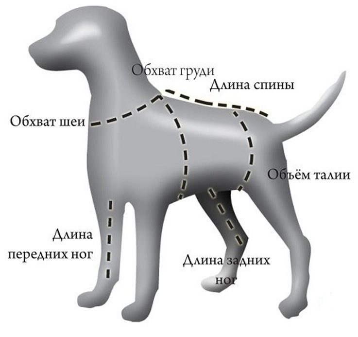

Как измерить собаку
Мерки нужны, чтобы изделие село точно по фигуре. Если сомневаетесь, напишите мне, подскажу по фото или голосом.

Что мерить
Для ошейника
Обхват шеи.
Для шлейки
Обхват груди, обхват шеи и длина спины.
Советы
- Берите мягкую сантиметровую ленту или шнурок, потом приложите его к линейке.
- Лента должна прилегать плотно, но не сдавливать. Между лентой и собакой должны проходить два пальца.
- Обхват шеи мерьте там, где ошейник носится обычно.
- Обхват груди мерьте в самом широком месте, сразу за передними лапами.
- Длину спины мерьте от основания шеи до основания хвоста.
- Если собака вертится, попросите помощника и сделайте мерки по два раза.